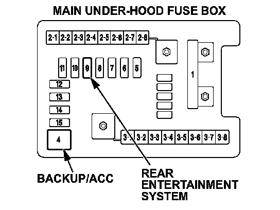
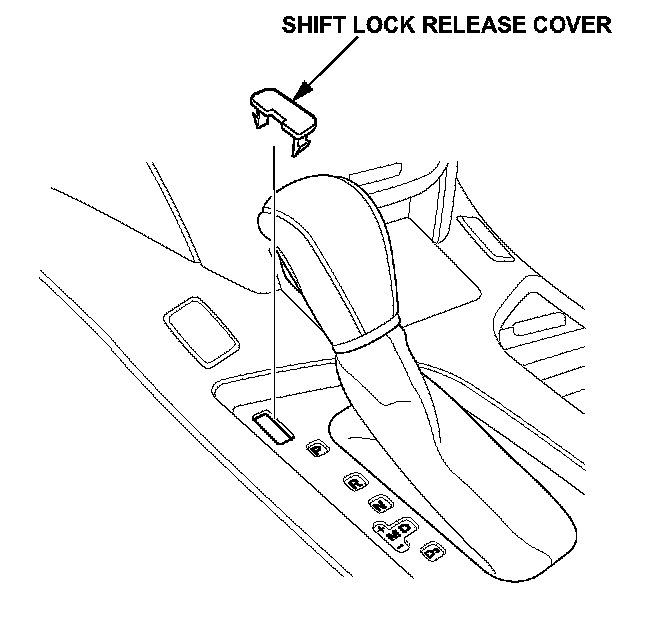
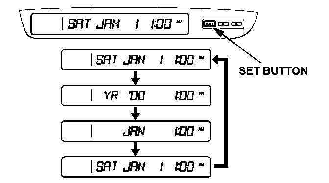
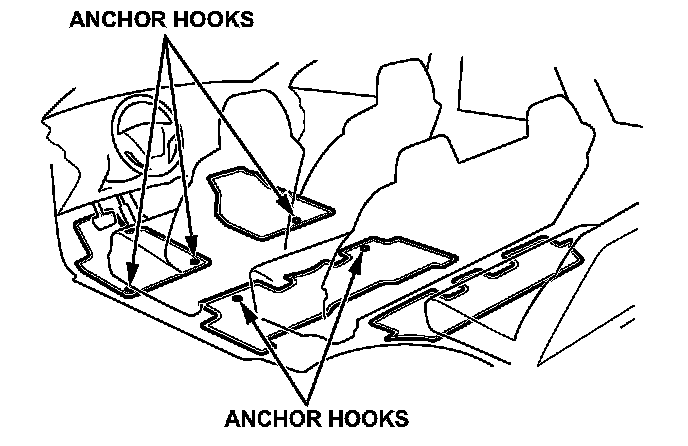
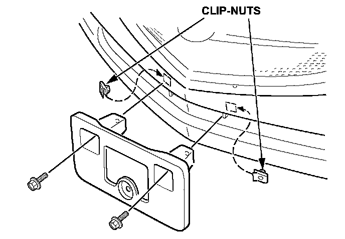
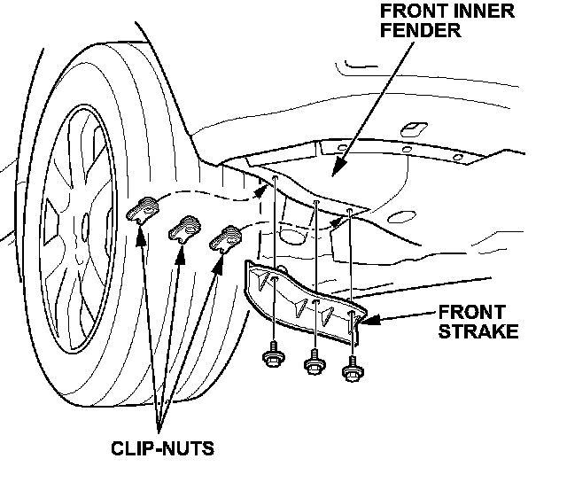
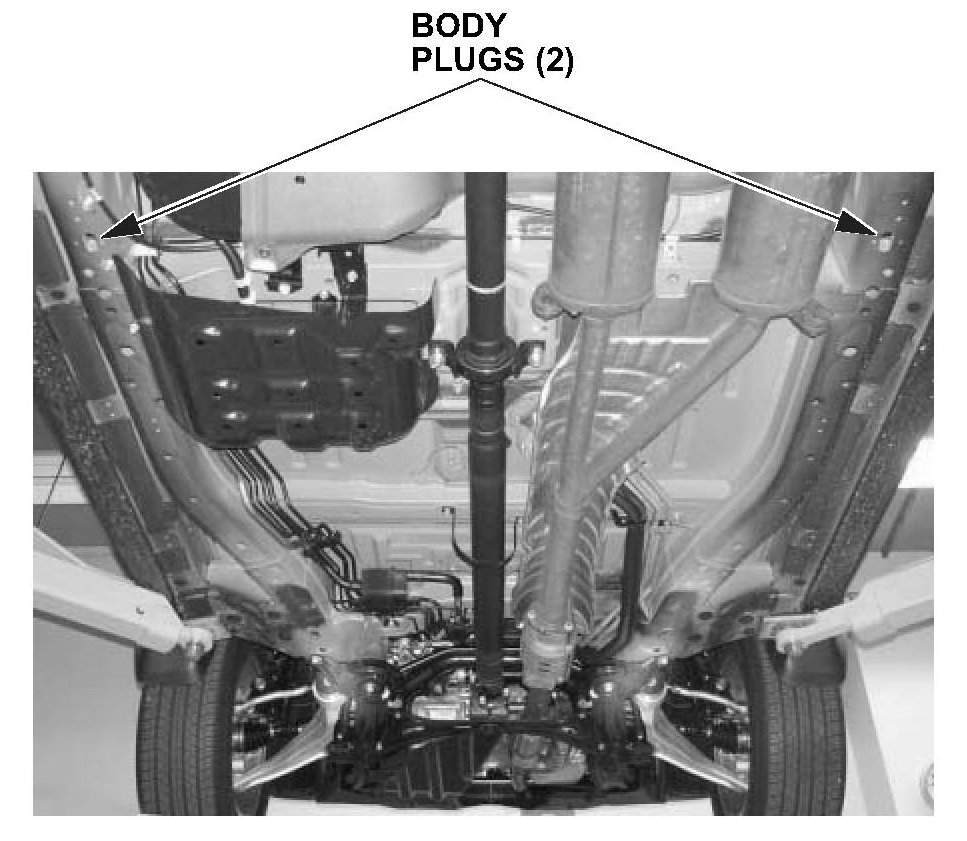

TQI Procedures
NOTE:Make sure you complete the TQI form in the maintenance journal. You will find it in the glove box. The TQI procedure is not finished until this bulletin and the TQI form are both completed.
Install the Fuses
To prevent battery drain during shipping, the No. 4 (40 A, Backup/ACC) fuse and the No.9 (7.5 A, Rear Entertainment System, if equipped) fuses are removed and stored in the glove box.

Make sure the ignition switch is in LOCK (0), then reinstall the fuses in the main under-hood fuse box.
Install the Shift Lock Release Cover
The shift lock release cover is in a plastic bag with the owner's manual kit in the glove box. Remove the cover from the bag, and install it into the shift lock release opening to the left of the shift lever.

NOTE:
The shift lock release cover must be installed with the notch on the left side of the slot.
Enter the Audio and Navigation System Anti-Theft Codes
After installing the fuses, enter the 5-digit anti-theft code for the audio system, and the 4-digit code for the navigation system (if equipped). The anti-theft code stickers are located in a small bag in the glove box.
After entering the anti-theft codes, attach one set of the anti-theft code stickers for the audio system and the navigation system onto the appropriate card. The second set of stickers should be given to the client for safekeeping, rather than left in the vehicle.
Set the Clock and Calendar (Models Without Navigation)
You can see the clock and calendar information on the upper display.
1. Press and hold the SET button until the clock begins to blink.

2. Press and release the SET button repeatedly. The mode switches from hours, minutes, AM/PM, year, months, and then to day as shown.
3. Select the desired mode by pressing the SET button, then press either up arrow or down arrow buttons to change the setting.
4. After setting the day information, pressing the SET button again cancels this setting mode, and the system shows the adjusted information.
NOTE:
^ It is not necessary to set the clock for vehicles equipped with navigation. The clock is updated from the GPS.
^ The default setting for the navigation system clock regarding daylight savings time has been changed from AUTO to OFF.
Remove the Protective Coverings From the Interior
There are several protective coverings on the interior trim pieces and some areas of the carpet. Carefully remove all of them. Remove the covers with clean hands so that you do not soil the fabric.
Remove the Protective Coverings From the Exterior
Carefully remove all the exterior protective coverings (refer to Service Bulletin 96-009, Removal of Protective Coatings During TQI). Before removing the hood covering, pop the windshield washer nozzles out of the hood. Be sure to reinstall them after removing the covering.
Install the Floor Mats

Install the mats during the TQI, and be sure to place the eyelets in the driver's mat over the anchor hooks on the floor. Also place the eyelets in the second row floor mat over the anchor hooks on the floor under the front seats.
NOTE:
Models with the Entertainment Package include a third row floor mat.
Check(Set the Tire Pressures (Including the Spare Tire)
To prevent flat spots during shipping and storage, the tires are inflated to 40 to 50 psi. To avoid client complaints about harsh ride quality, adjust the cold tire pressures to these readings:
^ Tires - 32 psi (front and rear)
^ Spare - 60 psi
NOTE:
If you are in a colder climate, make sure the tires are at the outside ambient temperature before setting the pressure.
Install the Front License Plate Holder
The front license plate holder and mounting hardware are in the rear cargo area. If state regulations require that a front license plate be installed, do this:
1. Reach behind the front bumper, and remove the two bumper plugs by releasing the lock tabs.
2. Insert the two clip-nuts, and install the holder onto the bumper with the two washer-bolts, then install the license plate.

NOTE:
The remaining hardware in the kit is for attaching the rear license plate to the rear license plate holder.
Install the Front Strakes

The front strakes are removed for shipping to prevent them from being damaged. The strakes are packaged with the license plate holder. Using the three clip-nuts and screws provided in the TQI kit, install the front strakes to the front inner fenders.
Install the Body Plugs

Two body plugs must be installed in the rear portion of the vehicle. Install the plugs as shown below.
NOTE:
Some models shipped before October 4, 2006, include two extra body plugs due to a packaging error. These extra body plugs can be discarded.
Set Up the Rear Entertainment System (If Equipped)
The rear entertainment system is available in the Entertainment Package. The system consists of:
^ Dashboard audio unit with front and rear system controls
^ Ceiling-mounted, swing-down video screen
^ Removable, wireless remote control
^ Audio CD/DVD player mounted in the lower dashboard
^ Two wireless headphones
^ Three audio jacks with individual volume controls on the back of the center console (for third row passengers)
^ Video game/equipment jack on the back of the center console
This system allows the front seat occupants to listen to one audio source (radio or CD) through the vehicle's speakers, while the second and third row passengers can watch a DVD program or listen to a different audio source through the headphones. For more detailed information, refer to the 2007 MDX Owner's Manual.
To verify that the system works, do this:
1. Remove the remote control, both sets of wireless headphones, and the batteries from the plastic bag located in the cargo area storage compartment.
2. Install the batteries into the headphones. Each headphone uses one AM battery that is installed under the cover of the left ear piece. To remove the battery cover, put a coin in the slot and twist it slightly. The remote uses three BR3032 batteries that are already installed.
3. To use the headphones, pivot the ear pieces outward. This turns the headphones ON. When you remove the headphones, the ear pieces pivot inward, and the headphones turn OFF. Store the headphones in the flat OFF position.
4. Remove the DVD demonstration disc from the owner's manual packet.
5. Turn the ignition switch to the ACC (I) or ON (II) position, then insert the DVD into the DVD player.
6. Release the screen by pressing the RELEASE button, then lower the screen to the detent.
7. Adjust the volume with the dial on the ear piece.
8. While the DVD is playing, test the functions with the remote control.
9. Repeat this test with the second set of wireless headphones to make sure both work properly.
NOTE:
The wireless headphones work in the two rear seat rows only. They do not work in the front seats or outside the vehicle. Additional wireless headphones can be ordered from the parts department.
10. When you are finished, install the remote control in the ceiling unit. Store both headphones in the front seat-back pockets.
11. Leave the DVD in the player for the client, and store its jewel case in the glove box.
Activate the Remote Driver's Seat Memory
Keyless memory settings can be linked to remote transmitters 1 and 2 (identified on the back as MEMORY 1 or MEMORY 2). Once linked, depending on which transmitter unlocks the vehicle, the corresponding memory positions are chosen. To link or unlink the remote transmitters, do this:
1. Press and hold the LOCK and UNLOCK buttons at the same time for about 1 second.
2. The LED blinks once to indicate the remote is linked; it blinks twice to indicate it is unlinked.
NOTE:
The customization settings for the remote that unlocks the vehicle will be selected.
Check the Moonroof One-Touch Feature
Make sure the moonroof one-touch feature works correctly. When you firmly slide the moonroof switch backward and release it, the moon roof should open fully; when you firmly slide the switch forward and release it, the moonroof should close fully; when you push up on the switch and release it, the moonroof should tilt. If the moonroof doesn't work this way, reset the control unit.
To reset the moonroof control unit, do this:
1. Turn the ignition switch to LOCK (0).
2. Press and hold the tilt switch, and turn the ignition switch to ON (II).
3. Release the tilt switch, and turn the ignition switch to LOCK (0).
4. Repeat steps 2 and 3 four times.
5. Press and hold the moon roof open switch for 3 seconds after the moonroof is fully opened.
6. Press and hold the moon roof close switch for 3 seconds after the moonroof is fully closed (tilted).
7. Confirm that the moonroof control unit is reset by using the moon roof AUTO OPEN and AUTO CLOSE functions.
For more information, refer to Body Electrical section of the 2007 MDX Service Manual.
NOTE:
The moonroof auto-reverse feature does not require initialization, and disconnecting the battery does not require initialization of the AUTO function. The moonroof can also be opened with the remote transmitter (see Key and Remote Transmitter Operation in this bulletin).
Check / Refresh the XM Satellite Radio Dealer Demo Service
The XM Satellite Radio comes from the factory activated with the dealer demo service. Once you install the No.4 fuse, the XM radio will receive the full range of available XM channels. Make sure this service is activated by checking if the radio is getting channels 000, 001, 007, 009, 047, 122, 174, and 247. If it is not, do a rapid refresh on the iN (Interactive Network). Without the dealer demo service activated, the XM radio only displays channels 000, 001,174, and 247. To check if the dealer demo service is activated, do this:
1. Turn the ignition switch to ON (II). Turn on the radio, and enter the audio unit anti-theft code. Then press the XM button.
2. Make sure the radio is in CHANNEL MODE, not CATEGORY MODE. Press and hold the DISP-MODE button for 6 seconds (models without navigation) or touch the MODE icon (models with navigation) to switch between modes.
3. Tune to channel 001 (channel 1 is the XM preview channel) to make sure you are receiving the XM signal. If you do not get a clear signal, park the vehicle outside where there is a clear view of the southern sky.
4. Look at the audio unit display and turn the TUNE knob.
^ If you can tune to channels 000, 001, 007, 009, 047, 122, 174, and 247, the dealer demo service is activated. Tune to channel 001 and leave the radio ON (II) for 7 minutes to refresh the dealer demo service. No further action is needed.
^ If you can only tune to channels 000, 001, 174, and 247, the dealer demo service is not yet activated, and an activation refresh needs to be done. Go to step 5.
5. Turn the TUNE knob to 000, then write down the 8-digit XM radio ID number you see in the audio unit display. You need this number, your dealer number, and the VIN to do an activation refresh of the dealer demo service. Then go to step 6.
NOTE:
^ If you cannot tune to channel 000, you are in CATEGORY MODE. See step 2 above to switch from CATEGORY MODE to CHANNEL MODE.
^ The ID number does not include the letters I, O, S, or F.
6. Go to an iN workstation.
NOTE:
If you do not have access to iN, call XM Satellite Radio, and follow the instructions of the automated menu. When the agent answers, ask for a rapid dealer activation refresh, then go to step 9.
7. From the iN main menu, click on SERVICE, click on Service Bay, and then click on XM Radio. This brings up the DEALER ACTIVATION REFRESH screen.
NOTE:
If you cannot bring up this display, call the iN Support Center.
8. Enter the 8-digit XM Satellite Radio ID number you wrote down in step 5. Then click on Submit. You will see the ACTIVATION REFRESH screen once the ID number is recognized.
NOTE:
If you entered the ID number incorrectly, or it was not recognized, you will see an error display. If this happens, follow the instructions on the display.
9. Turn the TUNE knob to 001 to make sure you are receiving the XM signal. If you do not get a clear signal, park the vehicle outside where there is a clear view of the southern sky, then go to step 10.
10. Leave the radio on for at least 10 minutes, then go to step 11.
11. Look at the audio unit display, and turn the TUNE knob.
^ If you can tune to channels 000, 001, 007, 009, 047, 122, 174, and 247, the dealer demo service is activated. No further action is needed.
^ If you can only tune to channels 000, 001, 174, and 247, the dealer demo service is not yet activated. Repeat steps 9 and 10 for up to 2 hours until the dealer demo service is activated.
^ If, after 2 hours, you can only tune to channels 000,001,174, and 247, repeat steps 6 thru 10.
NOTE:
^ The dealer demo service lasts for 7 months or until the vehicle's RDR (retail delivery registration) is submitted.
^ After the vehicle is registered, the dealer demo service converts to a client account. The client gets a 3-month trial service of all available non-premium XM channels. If the client decides to end the service after that time, the XM radio reverts to preview mode. Normal AM and FM radio reception is not affected by ending the service.
^ The XM radio receives digital programming broadcasts from two fixed-orbit satellites near the equator along with a network of ground antennas (repeaters). You will get the strongest signal if you park the vehicle where there is a clear view of the southern sky.
^ The XM radio may lose reception when you are driving through a tunnel, under an overpass, inside a parking garage, or near the northern face of a canyon or a mountain.
^ To cut down on reception loss, the XM radio uses a buffer. If the reception loss lasts longer than the buffering period, the signal goes silent.
^ Because the XM radio signal is digital, any reception loss makes the signal go silent; the signal usually does not fade like it does with a conventional radio.
^ If you ever need to replace the XM radio receiver, call XM Satellite Radio at (800) 852-9696. Be prepared to give them your dealer number, the VIN, and the XM radio ID numbers from the printed label on the side of the old and the new receiver units.
^ Your client's XM radio presets will be lost if you disconnect the 12-volt battery or if it goes dead. Be sure to write down the presets before disconnecting the 12-volt battery.
Do the HandsFreeLink Operational Check To confirm that the HFL (HandsFreeLink) system is working and ready to use, start the vehicle, and hold the HFL BACK button (on the steering wheel) for 10 seconds. The system should say The HandsFreeLink system is okay."
Reset the AcuraLink Control Unit
When the No. 4 fuse is removed during vehicle shipment, the AcuraLink control unit sets DTCs (diagnostic trouble codes). These DTCs need to be cleared during the TQI using this procedure:
NOTE:
After installing the fuse, you must wait 30 seconds before doing this procedure.
1. Turn the ignition switch to ON (II).
2. On the navigation system disclaimer screen, select OK by pressing the interface dial. (The interface dial is the large knob at the center of the dashboard. It has two parts: an outer knob and an inner selector. The interface dial is used to control several functions, including AcuraLink.)
3. Next, press and hold the MAP-GUIDE, MENU, and CANCEL buttons at the same time, until the main diagnostic screen is displayed.
4. Turn the interface dial to highlight XM (HIP), then press the interface dial.
5. Turn the interface dial to highlight XM (HIP) ECU, then press the interface dial to select.
6. Turn the interface dial to highlight Data Reset, then press the interface dial.
7. Turn the interface dial to highlight Yes, then press the interface dial.
8. Select OK by pressing the interface dial, then push the interface dial to the left one time.
9. Turn the interface dial to highlight Return, then press the interface dial.
10. Again, turn the interface dial to highlight Return, then press the interface dial. This returns you to the navigation system screen.
If the above procedure did not work, disconnect the negative cable from the battery for 30 seconds, then reconnect it. Then repeat steps 1 thru 10.
NOTE:
After reconnecting the battery, you must wait 30 seconds, then do the following:
^ Reenter the audio unit anti-theft code.
^ Reenter the navigation system code.
^ Do the idle learn procedure.
Do the Idle Learn Procedure
The idle learn procedure must be done on all 2007 MDX models at the TQI after the No.4 fuse is installed (see Install the Fuses in this bulletin.) If the idle learn procedure is not done or if it's done incorrectly, the engine may have an erratic idle.
NOTE:
If you have not reset the AcuraLink control unit, do that first.
1. Make sure all electrical items (NC, radio, rear window defogger, lights, etc.) are off.
2. Start the engine, and let it reach operating temperature (the cooling fans cycle twice).
3. Let the engine idle for 10 minutes with the throttle closed.
NOTE:
Idle speed adjustment is done by the ECM/PCM; there is no adjustment screw.
So that the PCM can learn the engine idle characteristics, also do the idle learn procedure whenever you do any of the following:
^ Disconnect the battery.
^ Replace the PCM, or unplug its connectors.
^ Reset the PCM with the HDS.
^ Remove the Main (120 A) and Backup fuses.
^ Remove either of the wires from the under-hood fuse/relay box terminal.
^ Disconnect any of the connectors from the back of the under-hood fuse/relay box.
^ Disconnect the connector between the engine compartment wire harness and the PCM wire harness.
NOTE:
Idle learn does not need to be repeated after you erase DTCs.
Do the CKP-Pattern Learn Procedure
To ensure proper engine operation, do the CKP- pattern learn procedure after doing the idle learn procedure. Do this procedure on a level road during the TQI test-drive. The procedure consists of a low-rpm and a high-rpm pattern learn. Make sure you do the low-rpm pattern learn first.
1. Low-rpm Pattern Learn: Shift to 2 or D3, and decelerate with the throttle fully closed from 2,500 rpm to 1,000 rpm.
2. High-rpm Pattern Learn: With the transmission in the sequential sportshift mode, shift to 1, and decelerate with the throttle fully closed from 5,000 rpm to 3,000 rpm.
*Check/Clean the Front Grilles
The new grilles' upper and lower shields have dark silver satin plating. Fingerprints can only be removed using a cleaner. Use common spray-on glass cleaner or mild soap to clean the plating.*
Complete the Personalized Settings Check Sheet (To Be Done by Sales Staff)
Sales staff will ask the client to complete a check sheet specifying their preferences for the personalized settings in the MID. While the client is in the finance and insurance department, sales staff will program the features that will likely be set only once; when sales staff are ready to deliver the new vehicle to the client, they will then review and program the features that the client is likely to change often.